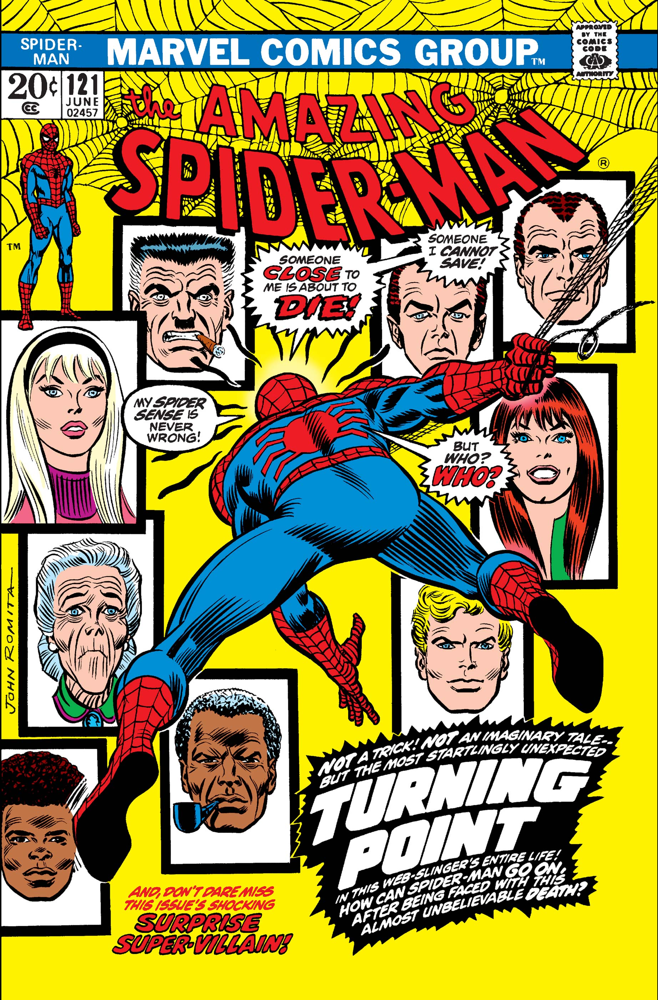
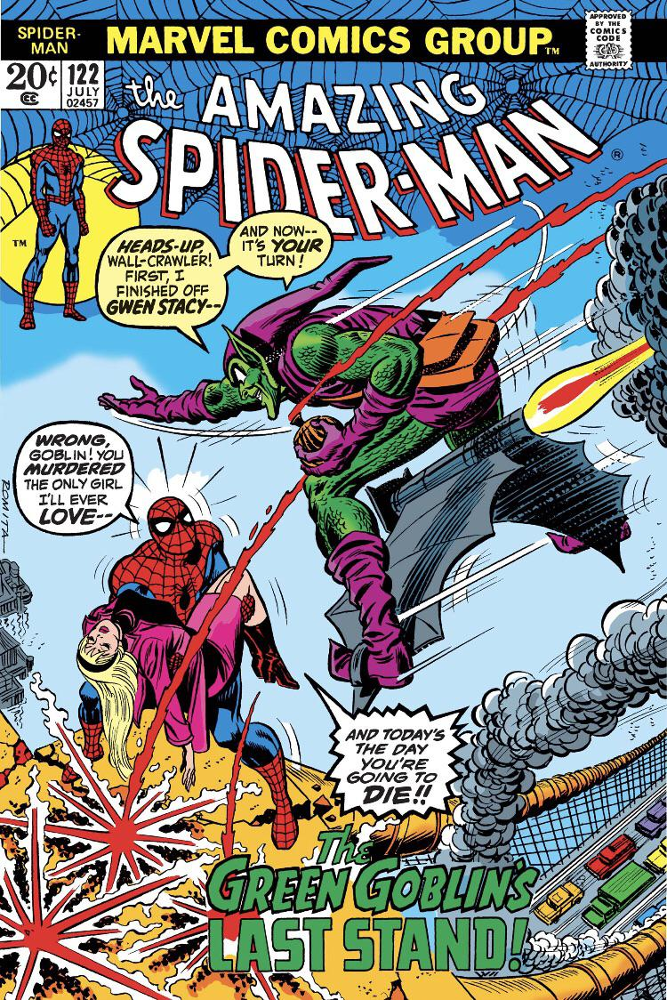

Losing Your Love
Pictured at right is a piece of artwork that I made during my senior year of high school. The prompt was to create a piece that utilized the artistic technique known as "foreshortening," and so I decided to create a composition based on a scene from one of my favorite Spider-Man movies, The Amazing Spider-Man 2.
"Foreshortening" is defined by Encyclopedia Britannica as a "method of rendering a specific object or figure in a picture in depth." This essentially means that the proportions of the subject in a picture are altered to make them appear as though they are existing in a three-dimensional space relative to the perspective of the "viewer" of the artwork. It describes the artistic technique that allow the viewer to experience the piece as if they existed within the moment being depicted and could see from a "real" first-person perspective.
This scene from The Amazing Spider-Man 2 depicts a moment of incredible tragedy and loss for Peter Parker, aka Spider-Man. Peter is confronted by his best-friend-gone-mad, Harry Osborn. In an intense aerial battle above a tall clock tower, the life of Peter's girlfriend Gwen Stacy is left literally hanging in the balance when Harry drops her from high above the clock tower steeple. Spider-Man catches Gwen in midair, and then crashes through the top of the building as they fall, shielding Gwen from the impact. The floor gives way beneath them and Gwen begins to fall again, but she is quickly caught by a webline from Peter. She clings to the web now wedged between the failing gears of the clock tower. Peter struggles to finally subdue a crazed Harry by webbing him to the clock's gears, which begin to lock up and come to a standstill, subsequently trapping Peter's foot between them. The weblines cannot hold the tension between the gears indefinitely, and so they eventually snap. The metal gears break and begin to plummet to the ground, freeing Peter's foot, but also sending Gwen into freefall. Peter dives down after her, relying on his web-shooters to send out a rescue line in an attempt to save her life. The webline reaches her, and Peter comes to a harsh halt in midair as he uses his super-strength to grab the inner scaffolding of the clock tower. Miraculously, none of the falling debris and shrapnel hit Gwen, but Peter's use of his webbing to catch her proves to be a fatal mistake. The webbing stops her descent just feet off of the ground, but it stretches down further and she suffers a heavy blow to the back of her head. Peter descends to the ground, thinking that he has saved the love of his life, but he soon realizes in horror that Gwen has died from the fall.



Here is a link to the movie clip from The Amazing Spider-Man 2 that includes the scene I based this artwork on. See if you can spot the exact frame in the movie that I tried to replicate in my piece! I think that particular movie shot is a great "real-life" example of foreshortening. Watch the movie clip, if you're okay with crying a little bit!
Pictured at left are the cover artworks of the comic book issues that told the original account of Gwen Stacy's death, which is a legendary story arc within the earlier Spider-Man comics. The arc took place over Volume 1, issues #121 and #122, which were published in June and July of 1973, respectively. It is known by comic fans all around the world as "The Night Gwen Stacy Died," or alternatively as "The Green Goblin's Last Stand." This represents a pivotal point in the overall plot of The Amazing Spider-Man as we know him today, especially in the context of Peter Parker's character development. It was at this point in the comics that the creators showed the readers a version of Peter they had not seen yet, that being a grief-stricken, beyond angry man fueled by a need for revenge. Navigate to the next page to see how grief can often make us turn to...RAGE.